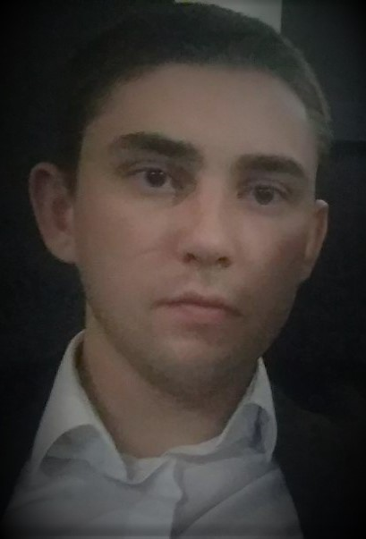

Matvei Bohush
+375296553633
bohush.mathew@gmail.com

Summary:
Highly motivated junior web developer with strong willing to become better and better every day.
Want to find great team, where I will be able to open my potential and show my skills, and my teammates will be able to do the same.
I visit different meetups, watch online lectures, and improve skills all my free time.
I believe that proactive way of life is the best way of life, and the greatest thing for everyone who wants to succeed in anything.
Skills
- HTML/CSS
- Angular, React Native
- Node.js
Work experience
Internship in IT company ITECHART:
- Troubleshooted and resolved web application issues escalated from customer support and other departments.
- Developed web-site mock-ups for clients to ensure quality control and client satisfaction before project development phase.
- Developed and managed project plans while providing status updates to management.
- Assisted senior web developers by supporting design and coding
- Promoted from front-end to junior web developer in four months and managed a client base.